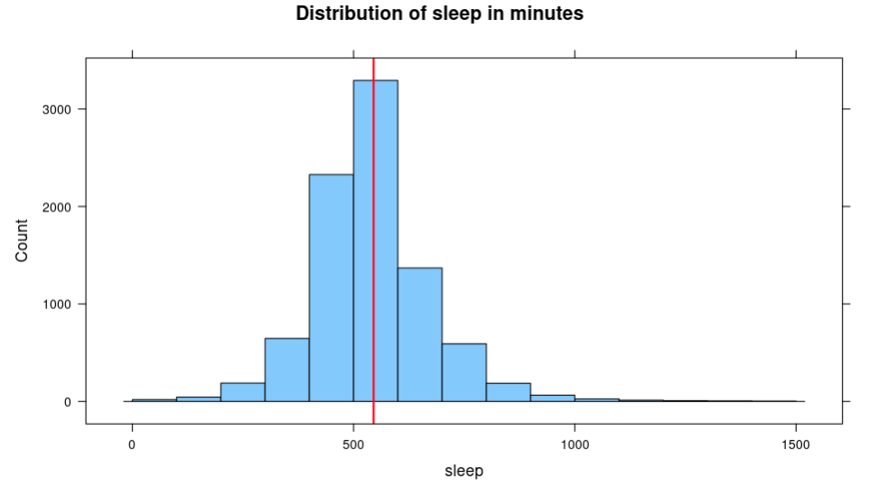

Lesson 17: A Normal Measure of Spread
Lesson 17: A Normal Measure of Spread
Objective:
Students will learn that standard deviation is another way to measure variability.
Materials:
-
How Far Apart? handout (LMR_U2_L4) – completed during Lesson 4
-
How Far Apart? (with standard deviation – SD) handout (LMR_U2_L17)
-
Projector to display visuals using RStudio
-
RScript with the functions in this lesson
Vocabulary:
Essential Concepts:
Essential Concepts:
The standard deviation is another measure of spread. This is commonly used by statisticians because of its role in common models and distributions, such as the Normal Model.
Lesson:
-
In their DS journals, ask students to create a two-column table and label the left-column as Measures of Center (Central Tendency) and the right column as Measures of Spread (Dispersion).
-
In pairs, ask students to recall methods they have learned so far for measuring center and measuring spread in distributions.
Measures of Center: Answer: mean (average or typical value), median
Measures of Spread: Answer: mean absolute deviation (MAD), interquartile range (IQR)
-
Share out a pair’s explanation and ask the rest of the pairs to agree or disagree. If there is disagreement, hold a class discussion until the lists are correct.
-
Point out that a measure of center or a measure of spread depicts one value for a distribution. Ask student pairs to discuss the following question:
- What does the value of each measure tell us about the data in the distribution? Possible answer: A measure of center tells us the value that is typical, or in the center. A measure of spread tells us how variable, or how spread apart, the data are.
-
Next, ask students to add the term standard deviation (SD) to their Measures of Spread column.
-
Inform students that the standard deviation of a distribution is another way to measure spread, or variability. The standard deviation is similar to the mean absolute deviation (MAD).
-
Ask students to recall the formula for calculating the MAD:
-
While the MAD measures the absolute distance of each data point from the mean, the standard deviation squares the distances of each data point from the mean. Both methods result in positive measurements because distance is always positive.
-
Ask students to recall that they calculated MAD values in the How Far Apart? handout (LMR_U2_L4) during Lesson 4 of this unit.
-
Show and discuss the formula for calculating the standard deviation of a dataset:
Note to teacher: There are different formulas for the standard deviation. We are presenting the simpler one, which divides by n. In AP Statistics (or college introductory statistics), students will learn that if they are using a sample of data to estimate the standard deviation for the population, then dividing by n−1 is a better estimator than dividing by n. But this technically requires a lot of scaffolding and leads to little understanding, and so we will stick with the simpler version. (In some books, this is called the “population value of the standard deviation” and the n−1 version is called the “sample estimate of the standard deviation.”)
-
Guide the class to complete the How Far Apart? (with standard deviation -- SD) handout (LMR_U2_L17) to calculate standard deviations of the dotplots using the formula listed above.
Answers: Plot (a) – SD = 1.0847 candies; Plot (c) – SD = 1.3770 candies
-
As a whole group, ask students to compare and contrast the standard deviations with the MAD values for the two plots in the handout.
Similarities between SD and MAD:
• Measure the same idea: variability, or spread
• Are based on looking at the "deviations" from the mean: the difference between an observation and the mean
• Uses the "typical" deviation
Differences between SD and MAD:
• The MAD uses the absolute value and finds the average of the absolute deviations from the mean
• The SD uses the square of each deviation from the mean, and finds the average of the squares
• The SD takes the square root of the average of the squares
-
Ask students why they think the SD takes the square root of the average of the squares. Possible response: Taking the square root of the average of the squares returns the measurements to their original units instead of square units.
-
To reinforce students’ conceptual understanding of standard deviation, student teams will estimate the standard deviation for a few numerical distributions and explain the reasoning for their estimate. Load and view the atus data, then run the following functions one by one:
> histogram(~sleep, data = atus, breaks = seq(0, 1500, by = 100), main = “Distribution of sleep in minutes”)
> sleep_mean <- mean(~sleep, data = atus)
> add_line(vline = sleep_mean)

-
Zoom in on the visual and give student teams a few minutes to discuss what they estimate the standard deviation to be. Have the reporter from each team report their estimate using the following sentence frame:
“The time spent sleeping (in minutes) typically varies from the mean by minutes.”
-
Reveal the actual standard deviation by running the function:
> sd(~sleep, data = atus)
-
Choose a reporter from a student team that had a good approximation to explain their reasoning.
-
Repeat this process with a few more numerical variables. Functions are provided below.
Household Activities
> histogram(~hh_activities, data = atus, nint = 13)
> hh_activities_mean <- mean(~hh_activities, data = atus)
> add_line(vline = hh_activities_mean)
“The time spent on household activities typically vary from the mean by minutes.”
> sd(~hh_activities, data = atus)
Socializing
> histogram(~socialize, data = atus, breaks = seq(0, 2000, by = 100))
> social_mean<-mean(~socialize, data = atus)
> add_line(vline = social_mean)
“The time spent socializing (in minutes) typically varies from the mean by minutes.”
> sd(~socialize, data = atus)
Class Scribes:
One team of students will give a brief talk to discuss what they think the 3 most important topics of the day were.